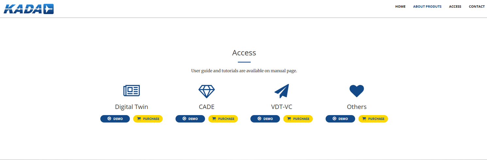

Digital Twin for Air Mobility Operations
Hosted on GitHub Pages | Powered by KADA Institute, Konkuk University, Seoul, South Korea
📖 Table of Contents
🚀 Overview
This project serves as the official gateway for our ODT application. While the repository is hosted on kadaservice.github.io/homepage, it is configured to securely direct users to our high-performance KADA Cloud.
🛠 How It Works
- Frontend Layer: Built and hosted via GitHub Pages for 100% uptime.
- Redirection Layer: A script validates the connection and routes the user.
- Cloud Layer: The main logic and database reside at: kada cloud system
💻 User Manual & Screenshots
1. Accessing the Link
Users navigate to the KADA's Air Mobility Soultions home page URL kadaservice.github.io/homepage.You will see our KADA's product lists and infroduction.
For the Demostration of our each products, you can click "Access" and "Demo" button in each respective product.

2. Redirection Gateway
The system automatically detects the cloud endpoint.

- Username and Password Authentication: You can receive your credentials from the KADA's administration team.
- Demo Username and Password:
kadauser01
kadajoy!
3. Live Cloud Application
Once the redirect is complete, you will arrive at the main functional dashboard.

3. Modular based DTAM applications
At the left side corner, you can see lists of KADA's products ODT, VDT and CADE. This is for the ODT applcaitons, so you will see available modules in the ODT system.
- Operations Features and Setup : You can receive your credentials from the KADA's administration team.
- 3D Visulation You can see your specific UAM flight in the 3D visualization module and you can also customize the view according to your preferences. Plus, there you can do the fault injection, weather changes and so on.
- Mission Upload Module : You can upload sample mission data for the UAM or you can specify your mission profile data and upload to the specific UAM vehicles.
- Situation Awareness Module : This module provides real-time monitoring and alerts for air mobility operations. THis modules have three main parts : (1) Detection and prediction of moving obstacles using Recurrent-YOLO model,
(2) Risk assessment (3) advisory recommendation using Adaptive AI model in this module. You can receive images data for AI training or situation data for the futures data analysis from this module.
- Report Generation Module : You can received all generated flight data from this module.
👥 The Development Team
This project was developed and is maintained by the following core members. Only the individuals listed below are authorized contributors to this specific release.
| Name |
Primary Role |
| AYE AYE MAW, PhD |
Project Lead / DevOps Engineer |
| 이각영, PhD |
FrontEnd Developer / Cloud Architect |
| NAN LAO YWET, PhD |
DevOps Engineer |
Note: For security and credit integrity, only the members listed above are responsible for the current deployment logic.
📜 License
© 2025 KADA Institute. All rights reserved.